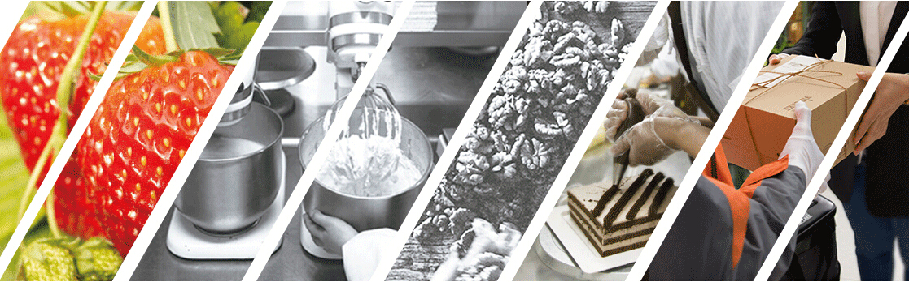
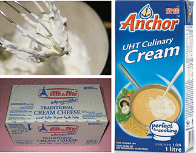
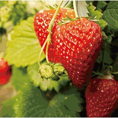
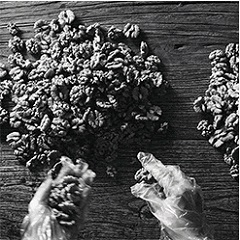
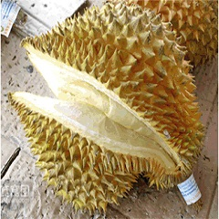
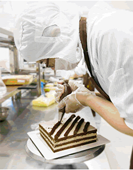
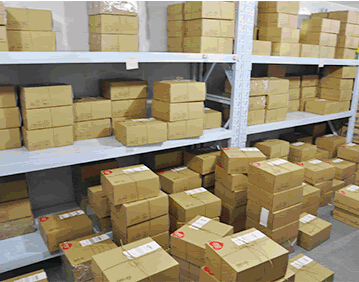
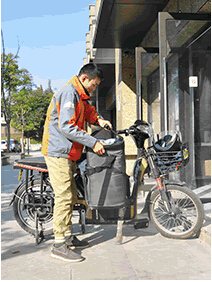
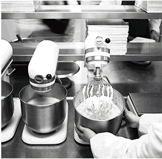
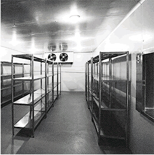

唯品客VipCake，与欧式蛋糕一脉相承，做真正的乳脂奶油蛋糕！
纯正的欧洲蛋糕一定使用的是动物乳脂淡奶油，我们坚决抵制那些用植脂奶油（人造奶油）作原料的蛋糕店，我们只使用顶级的纯乳脂淡奶油！
植脂奶油就是把植物脂肪和植物蛋白添加化剂，稳定剂，色素，香精等添加剂进行混合的产物，这样的蛋糕吃下去只会损害我们的身体！
而如脂奶油则根本不同，它是从天然鲜奶中提取，无任何化学添加剂，是真正的天然的原材料！
顶级的原材料才能制作出顶级的蛋糕，唯品客蛋糕，所有的奶油均从世界上最好的奶源国进口，而这也是判断蛋糕好坏的基本要求！
蛋糕从欧洲诞生那一刻起，就是人们传达祝福的载体，所以选用制作蛋糕的原材料在当时都是十分珍贵，而没有增加任何添加剂的蛋糕才能让我们健康的享用美食!
由于如脂奶油不含添加剂，所以保质期较短，为了确保我们蛋糕的新鲜品质，我们采用先订单后生产模式，从而实现最短的时间内将最佳口感的蛋糕送到顾客手中！

作为原材料的水果均从国外进口，精选天然有机高品质水果
我们尊重自然，感受天然食品的美味，拒绝反季转基因等食品作为制作原材料。



挑剔和苛刻是我们的座右铭



我们只有一个生产标准：卫生安全
打破传统的西点烘焙制作一直都是“一个师傅一个桌”的制作模式，唯品客按照药厂的硬件级别和卫生标准建造生产工厂，确保每个生产环境的卫生安全，让客户吃到放心的美味！

